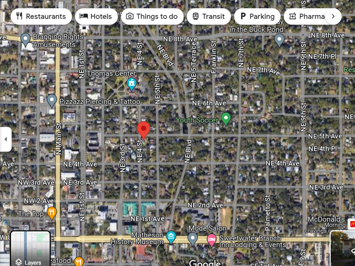
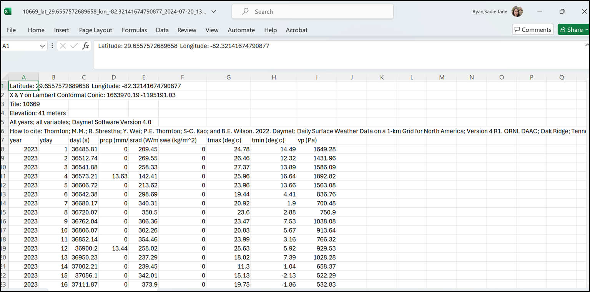

VectorByte Methods Training: ‘Climate’ variables for time-series analyses
Section 1. Choice and Acquisition
Choice
Before you dive into products, or just do what someone else did, think about the biological mechanisms you might be exploring. Think about what meteorological or climate data corresponds to the mechanism.
Example: mosquitoes (pick your species of choice)
When does temperature limit your mosquito of interest, and how?
Is minimum temperature likely to be most important?
What about maximum temperature?
Create reasonable hypotheses for mechanistic processes
Think about how these differ among temperate vs. tropical vs. boreal

Scale
You’ve decided minimum temperature will be important, but when and for how long?
For example, think about temporal scale:
- Do you need to know the temperature of the coldest month? Minimum temperature in an hour in a day?
- First month in which a daily minimum temperature is exceeded? (Thresholds)
- Average v. cumulative measures (think temperature and precipitation)
We also think about spatial scale. A bit of Tobler’s law –- how far does the effect carry (derived from the ‘law’ that things that are closer are more similar). So we think about various “geographic” considerations for met/climate variables:
- Is the nearest weather station useful for your organism of interest, is interpolation of data reflecting the likely response at the location?
- Where are measurements made?
- Is ground surface temperature equivalent to air temperature, and when does it matter?
- Does rain absorb into the surface or sit on it?
Acquisition
Often we’re going to need to focus on making the best of things.
Unless you have a weather station logging your variables of interest next to your trapping/collecting sites, you will use proxies in some way.
If your data are time series, you need regularly spaced, consistent observation or modeled products
Most ‘weather’ products are modeled (interpolated) in some way
Read the documentation carefully, and know what it is
Imperfect is often still useful, but may have important limitations
EOS products are also modeled, and spatiotemporal aggregations will also determine their utility
Beware of apparent consistency
Today, we will be exploring the following:
- Point extraction of Daymet data
- Useful for USA-based studies
- High frequency data availability
- Consistency already worked out for you.
Before you even start
What is the location of your vector time-series?
We assume absolutely perfect data, and chances are you have a coordinate pair
What projection is it in?
Whose GPS unit was it reported from?
How accurate or precise is it?
Throw it on Google maps and make sure it seems to be where you think it is.
Section 2: DAYMET point extraction example
Choose a location
Put your point in Google maps, or choose an address. For example:
29.6557572689658, -82.32141674790877
What is this?
This is my house – 405 NE 5th Avenue, Gainesville, FL.

Right click to get coordinates

Earthdata profile with NASA – make yourself an account - https://urs.earthdata.nasa.gov/
Then navigate to the DAYMET site


Locate the Single Pixel Extraction Tool

Input your coordinates, or navigate to the location you want on their map

You will see lots of choices of variables - DAYL - day length, PRCP - precip, etc. Use the website itself and the references to publications of the model for this product to fully understand what the variables are and mean - remember, a daily minimum could mean the lowest recording in a given hour, or may have a different value for day and night within a 24 hour period.
Choose the timeline you are interested in to select your date range. Remember, at a single pixel, “accidentally” downloading too many variables or too many years is just a bigger text file, but not huge. If you are downloading modeled climate data across a region and make this sort of mistake in requests, you may either be waiting a while, or end up with unwieldy huge files. You can always return and re-download.
DON’T OPEN YOUR DATA IN EXCEL – demo only for this workshop!
Annoying/informational header lines will need to be examined and you can determine how to format your data from there.

User choice about how to wrangle it into R
Be super careful about csv formats if you open in Excel, but you probably know this at this stage in your career. Generally, don’t. Just pull it into R and chop off rows or subset what you need, check the classes of each variable field you’ll use, make sure the units of measurement (temperature, VP, etc) are as you expect, and enjoy!
Last notes for the DAYMET data pull
For a single point, the question about what the projection is in the Daymet model should be ok, because you are not overlaying rasters, and you can see it all on google maps, both before and during your extraction
If you are doing this for multiple points, DEFINITELY THINK ABOUT THE PROJECTION
Pause – were you able to navigate this so far?
Daymet is a bit deluxe – high resolution (pixels are small), high frequency (daily availability). Easy UIs for data extraction
Limitations: It is just a model (pulling in all the best station data available across multiple agencies) Only continental North America (plus HI from 1980 and PR from 1950)
Seems to get released by calendar year (up to end of last year)
EXCERCISE!
Head to VecDyn, find a dataset within the USA What is its location? What is the date range and frequency of data?
Head to Daymet and pull the corresponding temperature and precipitation
Plot these together in rough plots in R.
Section 3: Going Global - ERA-5 access
ERA 5 is a global reanalysis product served by Copernicus, the European Center for Medium Range Weather Forecasts (ECMRWF) - The CDS - Climate Data Store on Copernicus holds the ERA5 products. https://cds.climate.copernicus.eu/datasets
In this section, we introduce you to a vignette to access ERA 5 that has been aggregated at admin level scales for the globe by projects related to the UK VBD Hub; using this derived dataset obviates the need to acquire and use an API Key from Copernicus. (https://ohvbd.vbdhub.org/reference/assoc_ad.html)
Alternately, we will share a link to R code demonstrating how to use API keys in your data queries of Copernicus directly (https://cran.r-project.org/web/packages/rcontroll/vignettes/climate.html)
Of key importance, caveats about ERA 5 (Sadie) - and areaData (and assoc_ad from Francis) is not a point based query, although you can query using Lat/Lon. Caveat emptor, you are querying an aggregated dataset, not pixel-level.
Section 4: Additional climate resources and caveats
EO vs Weather station data
EO - Earth Observation - primarily satellite data - from ‘looking down’ onto things (also called EOS data - earth observation system data)
LST - land surface temperature is reflectance converted to temperature via algorithms
What if it’s a forest? What is your vector experiencing?
What if there’s lots of clouds? What if cloud cover prevents accurate readings in a systematic way, e.g. at certain times of year?
Lots of products available, always a lag because someone has to process and QA/QC before you can use it
Weather Station Data
Point based data that often gets interpolated to represent irregular region shapes - great if you have lots of stations, less great with sparse coverage.
Requires people to record data at some step of the way; gaps can occur on holidays, larger gaps during natural disasters - know what missing data protocols are within the dataset.
Geography (where in the world) very much influences coverage and quality. Tracking down what the nearest weather station is takes a little time (look on NOAA, WMO), but getting those data can sometimes be complicated.
Much of weather data is collected and recorded for commercial purposes. Your access to those data is not guaranteed.
Today we have reviewed a few concepts and products - there are TONS out there.
Starting points are:
NOAA - lots of gridded products as well as weather stations
NASA - lots of processed EO data from many missions with many spatiotemporal resolutions and utility
ERA - large climate modeled runs and even counterfactuals
Copernicus - European entry point for gridded and processed data sets, model outputs
Citation
@online{ryan2026,
author = {Ryan, Sadie J.},
title = {{VectorByte} {Methods} {Training:} “{Climate}” Variables for
Time-Series Analyses},
date = {2026-05-30},
langid = {en}
}